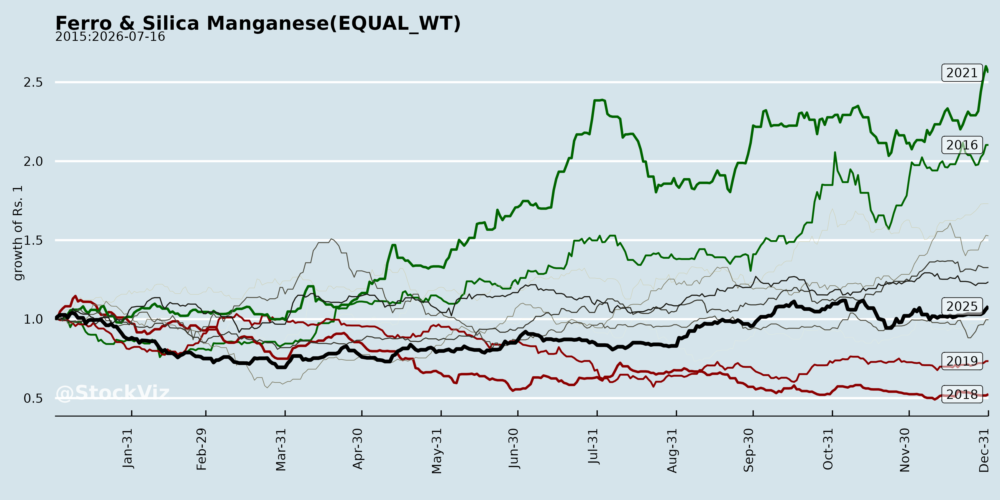
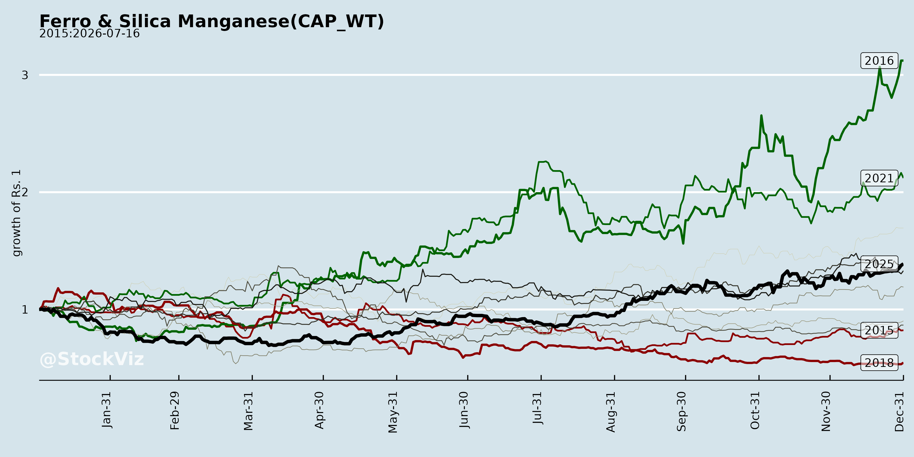
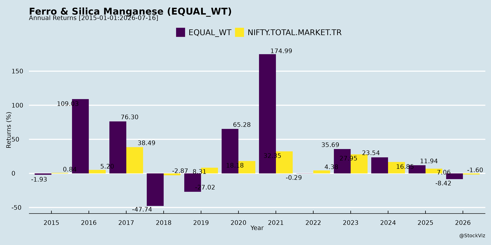
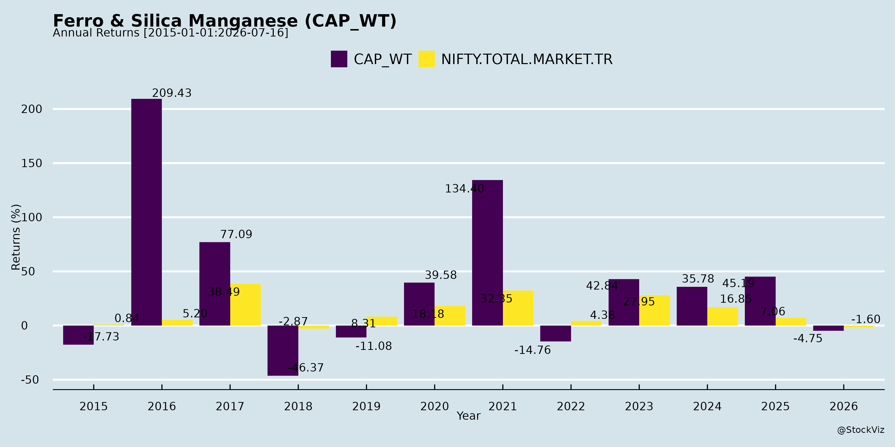
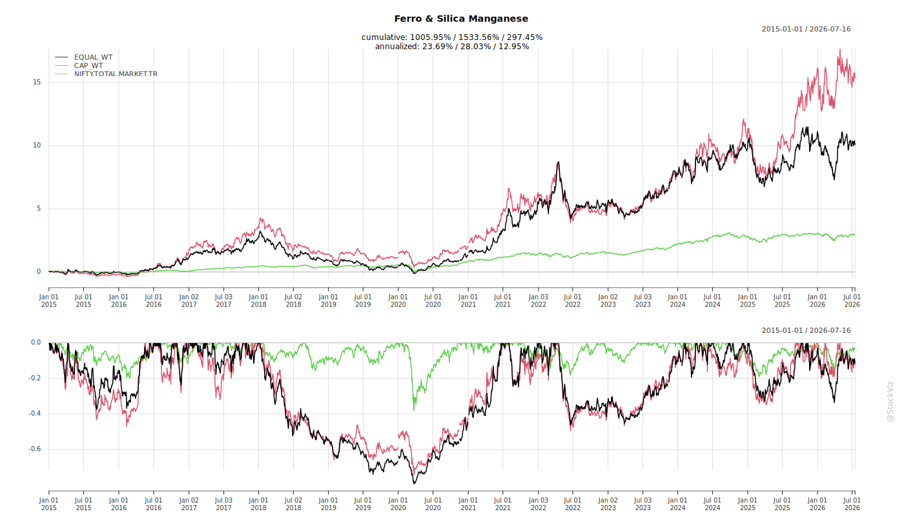
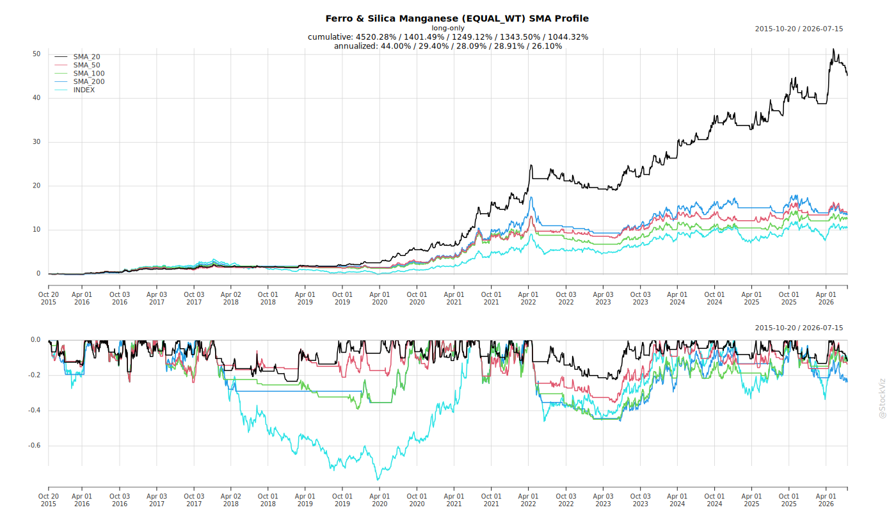
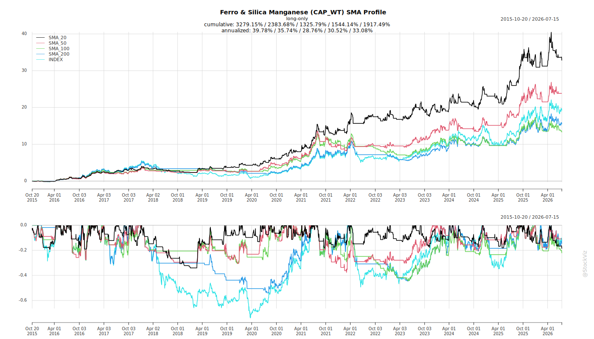
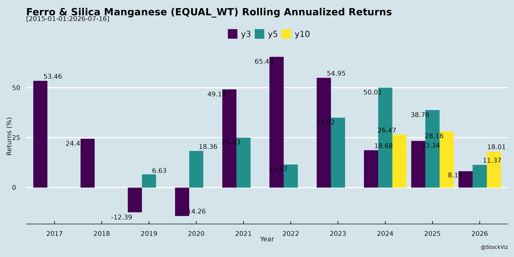
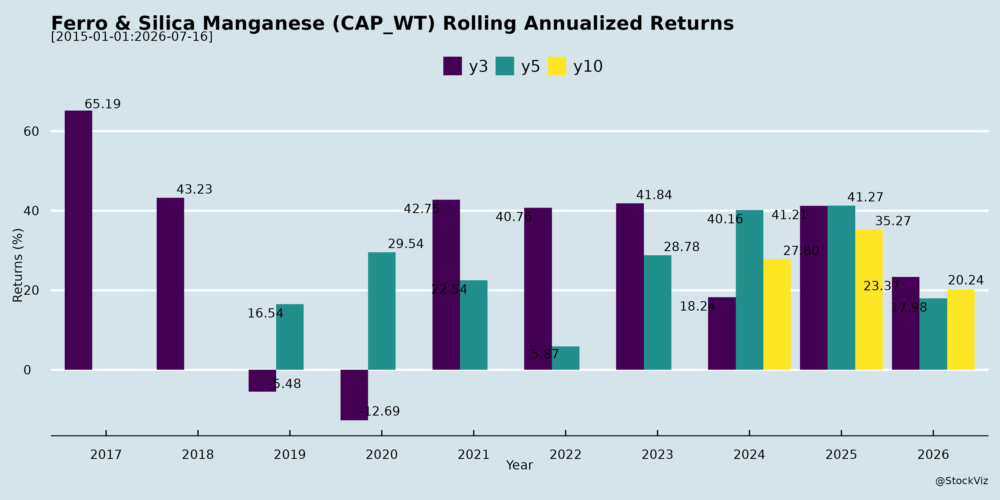

asof: 2026-04-16
Based on the provided sources, the landscape for the ferrochrome industry has evolved significantly over time, characterized by a structural shift in global cost curves, changing geopolitical and supply dynamics, and strategic expansion avenues.
Here is a detailed breakdown of how the challenges and opportunities have evolved:
The Evolution of Challenges
1. Escalating Input Costs and Supply Chain Pressures Over time, non-integrated producers have faced mounting and significant cost pressures due to rising raw material prices [1, 2]. For example, the price of UG2 chrome ore in South Africa has reached around $300 a tonne, and domestic ore prices in India have remained consistently elevated [1, 2]. Additionally, producers are exposed to volatility in the costs of imported metallurgical coke and thermal coal [3, 4]. Metallurgical coke prices, which had previously hit rock bottom, are now trending upwards to around $250 per tonne (approximately INR 28,000), with expectations of further near-term price hikes [5-9]. There has also been a slight increase in power generation costs due to the pricing and quality of coal [10-13].
2. Global Supply Dynamics and Special Tariffs A prominent evolving challenge is the shifting regulatory and production landscape in South Africa, a major global player. Recently, the South African utility Eskom announced special, reduced electricity tariffs (dropping from $0.135 to $0.87) for major producers like Glencore and Samancor [14-17]. This creates a potential threat of increased South African ferrochrome production, which could impact global supply balances [18, 19]. However, management views this with skepticism, noting that this reduced tariff barely covers the utility’s variable and legacy costs, and its long-term sustainability is highly questionable without government subsidies [15, 17, 20, 21]. Furthermore, increased ferrochrome production in South Africa would likely lead to a corresponding reduction in chrome ore exports to China, potentially balancing out the global market [22-25].
3. Inherent Market Volatility The industry continues to navigate periods of pricing volatility. While the ferrochrome price band has slowly but steadily moved upwards over the last 10 years, management expects ongoing fluctuations and volatility in both product realizations and raw material input costs [3, 4, 26-29].
The Evolution of Opportunities
1. Structural Shifts Favoring Integrated Producers As the cost curve for top producing countries moves significantly upwards, the evolving market heavily favors fully integrated producers like Indian Metals & Ferro Alloys Ltd (IMFA) [1, 2, 30, 31]. Because non-integrated producers in India and globally have had to cut back production due to margin pressures, a structural gap between demand and supply has emerged [32-35]. IMFA’s self-reliance—fueled by its captive chrome ore mines and in-house power generation—provides immense resilience and a competitive advantage in a high-cost environment [1, 2, 36-39].
2. Strong Pricing Realizations and Demand Buoyancy Prices and realizations have seen a noticeable and robust evolution from recent lows. Domestic ferrochrome prices have rebounded to the INR 118,000 to INR 120,000 per tonne mark, while Chinese prices stand strong at around $0.96 to $0.97 [40-43]. This pricing resilience is largely buoyed by consistent, albeit single-digit (2% to 3%), growth in global stainless-steel output [44, 45]. With long-term contracts and assured offtake arrangements, integrated players are perfectly positioned to capture these higher margins without the risk of unplaced inventory [44-47].
3. Massive Capacity Expansions and Consolidation The evolving market has allowed strong companies to execute aggressive growth and consolidation strategies. IMFA is capitalizing on this through two major avenues: * Greenfield Expansion (KNR 1): A 100,000 tonnes per annum project in Kalinganagar, on track to commission its first furnace in June 2026 [48-50]. * Strategic Acquisition (KNR 2): The acquisition of Tata Steel’s ferrochrome plant for a base consideration of INR 610 crores [50-52]. These moves will double IMFA’s capacity to over 0.5 million tonnes, making it India’s largest ferrochrome manufacturer and the sixth largest globally [51-53].
4. Enhanced Operational Efficiencies The new expansions bring an opportunity for vastly improved technoeconomic parameters. The Kalinganagar facilities provide a distinct logistical advantage due to their proximity to captive mines, stainless steel consumers, and the Paradip port [54-57]. Once these operations reach a steady state, this logistical friendliness is expected to reduce the weighted average EBITDA cost by INR 1,500 to INR 2,000 per tonne [55, 57-59]. Additionally, the new plant utilizes a closed furnace design that improves power generation norms [60, 61].
5. Diversification into Critical Minerals and Ethanol Over time, new global opportunities have emerged outside of traditional ferro alloys. With global powerhouses (like the U.S.) focusing heavily on securing critical minerals and the Indian government launching initiatives like PLI schemes and a critical minerals corridor, the processing and mining of rare earth and critical minerals has evolved into a strategic area of interest [62-67]. Companies are actively evaluating these value-accretive opportunities, as they naturally align with existing mining competencies [68-71]. Furthermore, diversification projects, such as a 120 KLD grain-based ethanol plant expected to be commissioned in 2026, provide alternative revenue streams and utilize existing bulk-handling infrastructure [72-78].
asof: 2026-04-16
The ferro alloys and ferrochrome industry is currently navigating several significant headwinds, primarily driven by escalating input costs, shifting global supply dynamics, and broader macroeconomic uncertainties.
Escalating Input and Raw Material Costs One of the most pressing challenges facing the industry is the rising cost of crucial raw materials. Chrome ore prices have seen a significant upward trajectory globally, with South African UG2 ore prices reaching approximately $300 per tonne, while domestic ore prices in India also remain highly elevated [1]. In addition to ore, metallurgical coke—which is predominantly imported by Indian producers from countries like Colombia—has hit a price floor and is now trending upwards [2, 3]. Current consumption costs are sitting around the $250 per tonne (or ₹28,000) mark, with expectations of continued price hikes in the near future [4-6]. Furthermore, the industry is dealing with slight increases in variable power generation costs, driven by higher thermal coal prices and fluctuations in coal quality [7-9].
Margin Pressures on Non-Integrated Producers The sharp increase in raw material costs is creating severe structural and operational pressures for non-integrated producers [1]. Unlike fully integrated players that have captive mining operations and power generation, non-integrated smelters are fully exposed to the inflated open-market prices for chrome ore and power [1, 10]. Consequently, many of these non-integrated producers across India and South Africa have been forced to sharply cut back their production or permanently shut down smaller, inefficient furnaces because their operations are no longer economically viable [11-13].
South African Tariff Subsidies and Supply Glut Risks A major geopolitical and structural headwind comes from South Africa, a dominant player in the global ferrochrome market. To rescue its struggling domestic producers, the South African utility, Eskom, alongside the regulator NERSA, approved heavily discounted, special electricity tariffs for major producers like Glencore and Samancor [14, 15]. The tariff was slashed from ZAR 1.35 to just ZAR 0.87 (or $0.135 to $0.087) [14, 15].
This massive subsidy is intended to revive the South African ferrochrome economy, with goals to push their national production up to 3.5 to 4 million tonnes [16]. This has raised concerns about a potential supply glut. When South Africa previously cut its ferrochrome output, China significantly increased its own production to fill the gap [17, 18]. The major risk now is that if South African mega-smelters (such as Glencore’s Lion facility) come back online and flood the market, and Chinese production does not proportionately decrease, the market will face a severe oversupply that could drive down global ferrochrome prices and hurt producer margins [18, 19]. While some industry leaders believe this might ultimately balance out—since increased South African ferrochrome production would logically reduce the amount of raw chrome ore they export to China, thus constraining Chinese output—it remains a highly complex and volatile threat to market stability [18, 20-22].
Market Volatility and Geopolitical Instability The industry remains structurally exposed to high volatility in both input costs and final product realizations [23, 24]. Furthermore, ongoing geopolitical crises are acting as a persistent headwind. These geopolitical tensions not only pressure global demand and economic stability [25], but they also disrupt global supply chains. For instance, geopolitical issues have caused logistical slippages and delays in the delivery of critical equipment, directly impacting the commissioning timelines of new industrial expansion projects [26].
asof: 2026-04-16
The ferrochrome and ferro alloys industry is a globally interconnected market heavily influenced by raw material availability, energy costs, and stainless steel production. Here are the key things to understand about the industry:
The Advantage of Fully Integrated Business Models One of the most critical dynamics in the industry today is the structural shift in the global cost curve, which heavily favors fully integrated producers [1, 2]. An integrated business model—where a company possesses its own captive chrome ore mines and captive power generation—provides essential resilience and competitiveness [3, 4]. Non-integrated producers currently face significant cost pressures because global chrome ore prices have moved significantly upwards, with South African UG2 ore prices reaching around $300 a tonne [2]. Because of these elevated input costs, many non-integrated producers in India and elsewhere have been forced to cut back on production [5, 6].
The Pivotal Role of South Africa and Power Tariffs South Africa is a massive player in the global ferrochrome supply chain, and its output is closely tied to its local electricity grid and tariff structures [7, 8]. Recently, South African ferrochrome output dropped, causing ore exports to China to rise as a consequence [3, 9]. To combat this, the South African utility Eskom and regulator NERSA have proposed special, reduced electricity tariffs (dropping from roughly ZAR 1.35 to ZAR 0.87) for major producers like Glencore and Samancor [10, 11]. However, the global supply dynamic is often a “zero-sum game” [3]. If lower tariffs successfully revive South African ferrochrome production, it is expected that their chrome ore exports to China will subsequently decrease [3]. If Chinese ferrochrome production drops as a result of less imported ore, global prices may remain stable, but if Chinese output does not drop while South Africa adds capacity, global ferrochrome prices could fall [12].
Demand Drivers and the Chinese Market The primary driver for ferrochrome demand is the stainless-steel industry, which has been seeing slow but steady growth of around 2% to 3% [13]. China is a massive consumer and producer, often influencing global pricing trends [14]. For instance, Chinese buyers tend to stock up on materials just before the Chinese New Year holidays, which can cause brief spikes in domestic and international prices [15, 16]. Furthermore, because China imposes a significant export duty on ferrochrome, its domestic production increases are not generally viewed as a major threat to global pricing [14].
Heavy Reliance on Imported Raw Materials The manufacturing of ferrochrome requires highly specific raw materials. Producing one tonne of ferrochrome roughly requires 2.5 tonnes of chrome ore and 0.65 tonnes of metallurgical coke [17, 18]. The industry is entirely dependent on imported coking coal (often sourced from countries like Colombia) because India lacks adequate reserves of the low-phosphorus coking coal required for the grade of ferrochrome produced [19, 20]. Consequently, companies are heavily exposed to the volatility of global metallurgical coke prices, which have recently hovered around the $250 per tonne (or INR 28,000) mark [21, 22].
The Shift Toward Long-Term Contracts To navigate the volatility of global markets, successful producers often prioritize long-term contracts over spot sales [13, 23]. These long-term binding offtake arrangements—which can last anywhere from one to five years—allow pricing to be adjusted monthly or quarterly depending on the customer [13, 23]. This strategy ensures guaranteed volume placement and shields producers from having to constantly find new buyers in the spot market [13, 24].
Growing Focus on Critical Minerals Finally, chromium and related minerals are increasingly being recognized globally as “critical minerals” due to their use in everything from household white goods to fighter aircraft [25, 26]. With China currently holding an overwhelming position in both the reserves and processing of these minerals, countries like the U.S. and India are aggressively pursuing self-sufficiency [25, 27]. This includes creating large funds to stockpile critical minerals, implementing coordinated government actions, and establishing dedicated critical mineral corridors to secure future supply chains [26, 27].
asof: 2026-04-16
The ferrochrome and ferro alloys industry is currently benefiting from several distinct market, structural, and macroeconomic tailwinds.
Robust Demand and Growth in Stainless Steel A primary driver for the industry is the steady growth in the stainless steel sector [1]. Although currently growing at a modest low single-digit rate of around 2% to 3%, this consistent increase in stainless steel output directly buoys the demand for ferrochrome [1]. Furthermore, there is significant potential for demand to accelerate if stimulus measures in China prove effective, or if ongoing global geopolitical issues move closer to a resolution [2].
Global Supply Constraints and Production Cutbacks The market is currently experiencing a tightened global supply, which has created a highly favorable pricing environment for active producers [3, 4]. This supply constraint is largely driven by South Africa, a major global player, sharply reducing its ferrochrome output [4]. Simultaneously, several non-integrated producers in India and other regions have also been forced to cut back their production [2, 4, 5]. Industry experts anticipate that a structural gap between demand and supply will persist over the next 1 to 2 years, providing continuous underlying support for market prices [5].
Surging Price Realizations Because of these supply-demand dynamics, ferrochrome prices have rebounded strongly from recent lows [3, 6]. Domestic prices in India have successfully moved back up to a robust range of INR 118,000 to INR 120,000 per tonne, while Chinese prices are hovering around USD 0.96 to USD 0.97 [7]. These elevated price realizations are directly translating into significantly higher EBITDA margins and overall profitability for producers [6, 8].
Structural Cost Pressures Benefiting Integrated Producers There is a profound upward structural shift in the global cost curve that disproportionately benefits fully integrated companies [9]. Non-integrated producers are facing severe cost pressures because chrome ore prices have surged significantly [10]. For example, UG2 chrome ore prices in South Africa have reached elevated levels of around USD 300 a tonne [10]. Because non-integrated players must purchase expensive ore to operate, fully integrated producers—those who rely on their own captive chrome ore mines and internal power generation—enjoy heavily insulated supply chains, leading to massive competitive advantages and enhanced resilience [10-12].
The “Zero-Sum” Nature of South African Competition While South Africa has recently proposed special, reduced electricity tariffs (lowering rates to USD 0.87 for select producers like Glencore and Samancor) to revive their dormant smelters, this is viewed by the industry as a “zero-sum game” rather than a true threat to global pricing [11, 13, 14]. There is widespread skepticism regarding the sustainability of these tariffs, as they reportedly only cover variable costs and rely heavily on government subsidies to bridge the gap [14, 15]. More importantly, if South African ferrochrome production does ramp back up, it will naturally consume local ore, leading to a corresponding reduction in chrome ore exports to China [11, 16, 17]. Because Chinese ferrochrome production had previously spiked to fill the void left by South Africa, a sudden lack of South African ore would force Chinese production back down, thereby preventing a global oversupply [11, 18, 19].
Increasing Strategic Importance of Critical Minerals Finally, there is an overarching macroeconomic tailwind driven by the global scramble to secure critical minerals [20, 21]. Recognizing that China currently holds an overwhelming dominance in the extraction and processing of critical minerals, nations worldwide are aggressively investing in self-sufficiency [20, 22]. The United States has announced a massive fund to stockpile critical minerals and is coordinating actions with global partners [21]. Concurrently, the Indian government has announced strategic initiatives, including a dedicated “critical minerals corridor” across states like Odisha and Andhra Pradesh [22]. This heightened governmental focus guarantees long-term strategic importance and potential policy support for minerals associated with the ferro alloys industry.
asof: 2026-04-16
The general outlook for the ferrochrome industry is robust and characterized by strong price realizations, steady demand growth, and structural supply constraints that heavily favor fully integrated producers [1-4].
Demand Buoyancy and Price Stability Global demand for ferrochrome is currently buoyant, primarily driven by a steady—albeit low single-digit (around 2% to 3%)—growth in stainless steel production [5, 6]. Consequently, global price realizations have rebounded significantly from recent lows [1, 3]. Domestic ferrochrome prices have stabilized at approximately INR 118,000 to INR 120,000 per tonne, while Chinese prices are hovering around USD 0.96 to USD 0.97 [7-12]. Industry leaders anticipate these strong price levels to hold steady in the near term, barring any unexpected macroeconomic curveballs, ensuring stable and highly profitable EBITDA margins [7, 9, 10, 12-14]. Looking at the broader historical context, the price band for ferrochrome has experienced a slow but steady upward trajectory over the last decade [15, 16]. Furthermore, if macroeconomic factors such as Chinese stimulus measures or the resolution of global geopolitical tensions materialize, industry demand and prices could climb even higher [17, 18].
Structural Supply Constraints The industry is currently experiencing a structural gap between demand and supply, which is expected to persist over the next one to two years, thereby providing continued support for elevated prices [19, 20]. This gap has been largely driven by sharp production cutbacks in major producing regions like South Africa, as well as among non-integrated producers in India [17, 18, 21, 22]. While ferrochrome production in China has picked up to compensate for South Africa’s reduction, China maintains a significant export duty on the alloy; therefore, increased Chinese production acts primarily to feed its own domestic consumption rather than threatening global pricing structures [23-28].
Rising Input Costs and the Advantage of Integrated Models A major factor shaping the industry’s outlook is the significant upward pressure on input costs. Chrome ore prices have surged globally, with South African UG2 ore reaching around USD 300 a tonne, and domestic Indian prices also remaining highly elevated [29, 30]. Additionally, raw material inputs like metallurgical coke—which is largely imported from places like Colombia—have bottomed out and are beginning to trend upward, currently sitting around USD 250 or INR 28,000 per tonne [31-36]. Thermal coal prices have also increased, adding to power generation costs [37-40].
These rising input costs are placing severe margin pressure on non-integrated ferrochrome producers who must buy ore and power on the open market [29, 30, 41, 42]. However, this dynamic actually benefits the industry’s long-term pricing floor: the heightened cost pressures across the value chain are expected to translate into sustained or higher final ferrochrome prices, creating a highly favorable environment for fully integrated producers who possess captive mining and power generation capabilities [2, 4, 29, 30, 41, 42].
South African Tariff Developments The industry is closely monitoring utility changes in South Africa, where the regulator NERSA has proposed slashing electricity tariffs (from roughly ZAR 0.135 to ZAR 0.87) for specific major producers like Glencore and Samancor for a one-year period [43-48]. While this could theoretically revive some South African smelting capacity, industry experts are highly skeptical about the long-term sustainability of this move, as the tariff only covers variable utility costs and relies on government reimbursements [44, 47, 49, 50]. Furthermore, analysts view this as a potential “zero-sum game”; if South African ferrochrome production increases, their raw chrome ore exports to China will logically decrease due to availability constraints, subsequently forcing Chinese ferrochrome production down and balancing out the global supply equation [23, 26, 51-56].
Shift Towards Domestic Markets and Critical Minerals Geographically, as the Indian economy expands, major domestic producers are planning to strategically pivot more of their sales volumes toward the domestic market to ensure local demand is adequately met. Over the next few years, this will mean a shift from highly export-skewed sales (e.g., 90% exports) to a more balanced 60-40 export-to-domestic ratio [57-62].
Finally, there is a growing global focus on securing “critical minerals,” driven by China’s overwhelming dominance in mineral processing [63, 64]. Major global players and governments, including India and the U.S., are heavily investing in critical mineral corridors and supply chains [65-68]. This macroeconomic shift presents future expansion and diversification opportunities for mining and processing companies within the ferro-alloy sector to explore critical mineral and rare earth element extraction [69, 70].
Copyright © 2023 SAS Data Analytics Pvt. Ltd. All rights reserved.